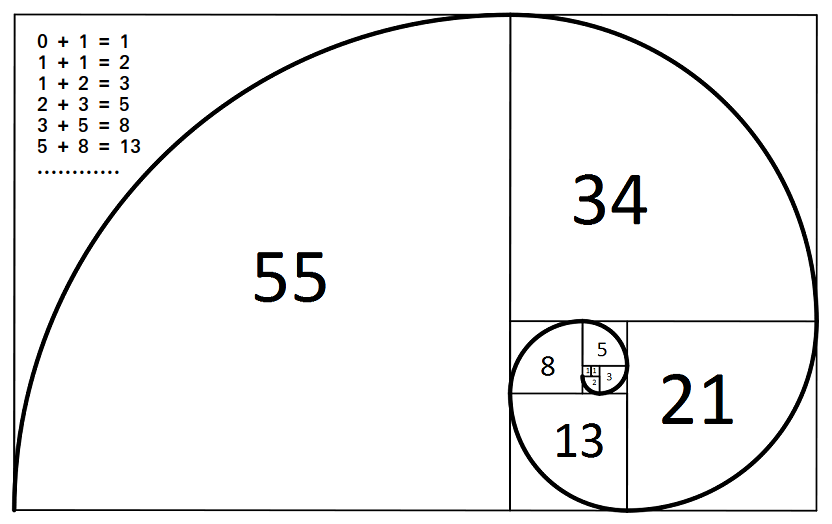

Let's learn intersting facts with Phi
So let's get started.....
Golden Ratio
If the ratio of two numbers turns out to be 1.618 (i.e φ), those two numbers are said to be in "Golden Ratio".Those two numbers can be anything, from sides of rectangle to curvature of spirals.
By definition, Two numbers are in golden ratio if the ratio of sum of numbers (a + b) divided by the larger number (a) is equal to larger number divided by smaller number (a / b).
φ = (a + b) / a
a / b = a + (b / a)
We can split the right-hand fraction like this:
(a / b) = (a / a) + (b / a)
(a / b) is the Golden Ratio φ, (a / a) =1 and (b / a) = 1φ , which gets us:
φ = 1 + (1 / φ)
The Golden Ratio can be defined in terms of itself!
Let us test it using just a few digits of accuracy:
φ = 1 + (1 / 1.618)
= 1 + 0.61805...
= 1.61805...
With more digits we would be more accurate.
Evolution Of Phi
Φ In Math
Φ has two properties that make it unique among all numbers.
- If you square Phi, you get a number exactly 1 greater than itself: 2.618…, or
Φ² = Φ + 1. - If you divide Phi into 1 to get its reciprocal, you get a number exactly 1 less than itself: 0.618…, or
1 / Φ = Φ – 1.
These relationships are derived from the dividing a line at its golden section point, the point at which the ratio of the line (A) to the larger section (B) is the same as the ratio of the larger section (B) to the smaller section (C).
This relationship is expressed mathematically as:
A = B + C and
A / B = B / C.
Solving for A, which on both sides give us this:
B + C = B²/C
Let’s say that C is 1 so we can determine the relative dimensions of the line segments. Now we simply have this:
B + 1 = B²
This can be rearranged as:
B² – B – 1 = 0
Note the various ways that this equation can be rearranged to express the relationship of the line segments, and also Phi’s unique properties:
B² = B + 1
1 / B = B – 1
B² – B – 0 = 0
Note: Bx means n raised to the x power. Some browsers may not display exponents as superscripts or raised characters.
Now we have a formula that can be solved using the Quadratic formula. This formula allows you to solve a quadratic equation for an unknown x, with a, b, and c as constants. A quadratic equation has this form:
ax² + bx + c = 0
The solution to this is found with the quadratic formula:
So our formula for the golden ratio above (B² – B – 0 = 0) can be expressed as this:
1a² – 1b – 1c = 0
The solution to this equation using the quadratic formula is (1 plus or minus the square root of 5) divided by 2:
( 1 + √5 ) / 2 = 1.6180339… = Φ
( 1 – √5 ) / 2 = -0.6180339… = -Φ
Golden Ratio
Enter any one value in any of the fields:
Answer will be displayed as soon as u click Calculate ...
Φ in Nature

Φ in Art
1. An Old man by Leonardo Da Vinci
2. The Vetruvian Man by Leonardo Da Vinci
3. MonaLisa by Leonardo Da Vinci

4. Holy Family by Micahelangelo
5. Self-portrait by Rembrandt
6. The sacrament of the Last Supper by Salvador Dali
Φ in Architecture
The Great Pyramid
Parthenon
Porch of Maidens
Chartres Cathedral
Modern Advancements
1. Graphic Design
Building your graphic design around a golden rectangle or a Fibonacci sequence takes some real art mastery, but any designer can use it as a general guideline to add tweaks and improvements to their design. The more you get used to the golden ratio, the more you’ll find that it’s merely showing you where the best parts of your design are—it’s not necessarily dictating how you should design your piece.
2. Logo Design
You can also use the golden ratio to add aesthetic appeal directly to a company’s branding. Even if the logo itself isn’t shaped like a golden rectangle or triangle, it can still employ elements that use golden proportions.
3. Typography
The easiest way to start using the golden ratio is to implement it within your typographical graphic design elements. For example, let’s say that you’re using 10pt font for the body text. Using the golden ratio, you can determine the best size for the headings by multiplying by 1.618.
So, 10 × 1.618 = 16.18, which you can round down to 16pt font.
Or let’s say your headline text is 20pt and you want to find an appropriate size for your body text. Since the headline text is the bigger element, you would divide by 1.618 instead of multiplying.
Therefore, 20/1.618 = 12.36, which you could round down to 12pt body text (or up to 13pt, if you so choose). That’s the beauty of the golden ratio—you don’t have to be perfect.
4. Sizing/cropping images
Naturally, a simple way to incorporate the golden ratio into a design is to crop photos (or any other images you may use) into a golden rectangle shape. Again, that doesn’t mean you should always do it for every photo, but you may want to consider it for an image that’s particularly central to your design.
When you crop images with the golden ratio in mind (especially when working with photography), you might also consider using the golden spiral as a guide for the shot’s composition. For example, you could crop a photo to golden proportions in such a way that the main focal point of the image is at the center of the corresponding golden spiral. It adds interest in a way that’s very similar to the rule of thirds, but many consider it a more natural-looking, aesthetically pleasing choice.